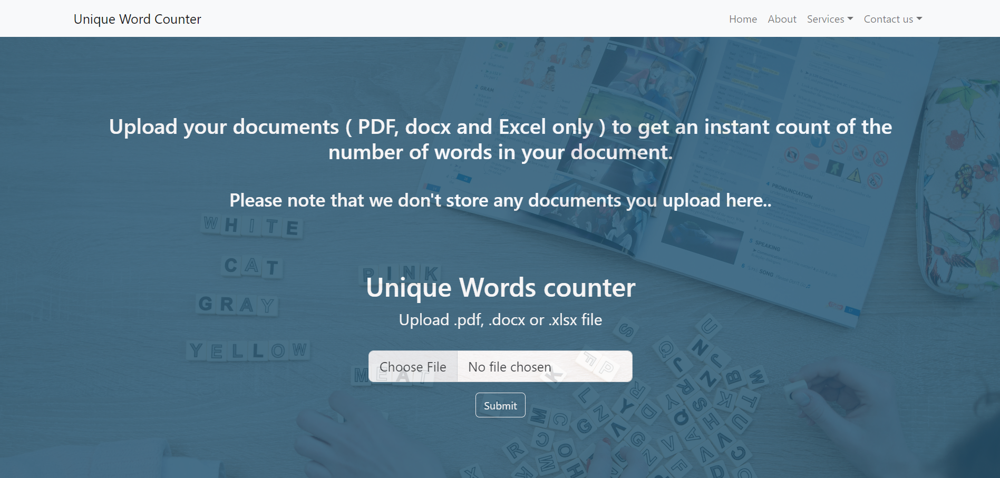
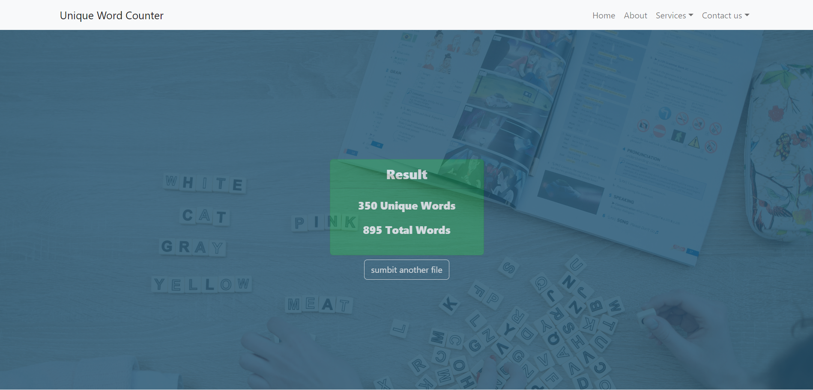

Inserting excel, word, and pdf files:-
Returning unique words and total words exist in the files:-
The inspiration for a unique word and total word counter project could stem from a variety of sources. One possible reason for creating such a project might be to aid in language analysis or natural language processing tasks. Counting unique words and total words in a text document can provide insights into the complexity of the language used, and may be helpful for researchers, linguists, or language learners. Another possible inspiration for this type of project could be to improve the efficiency of editing or writing workflows. By automating the process of counting unique and total words, writers or editors can save time and ensure accuracy in their work. This may be especially useful for professionals who frequently work with large documents or who need to quickly assess the content of multiple files. Finally, this project could also be inspired by a desire to learn new programming skills or to create a useful tool for personal use. By building a unique word and total word counter, programmers can gain experience with file manipulation, data structures, and string manipulation. Additionally, the tool may be useful for personal projects or tasks, such as analyzing text-based data or tracking word counts in personal writing projects.